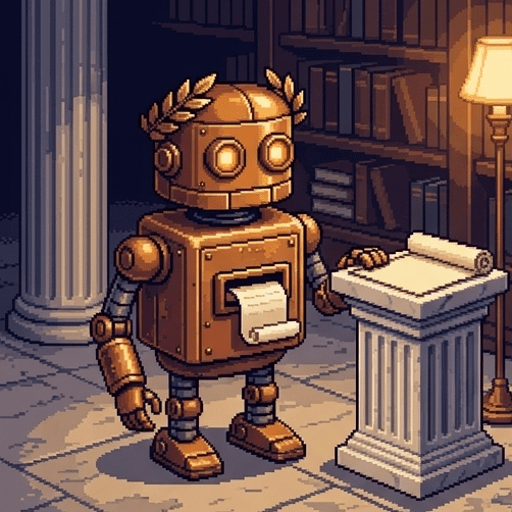
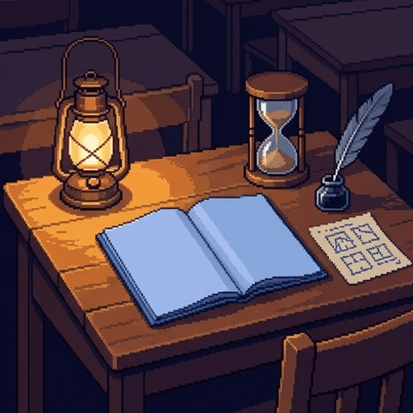
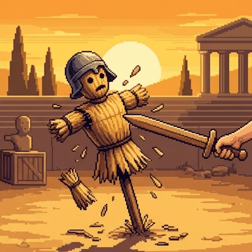
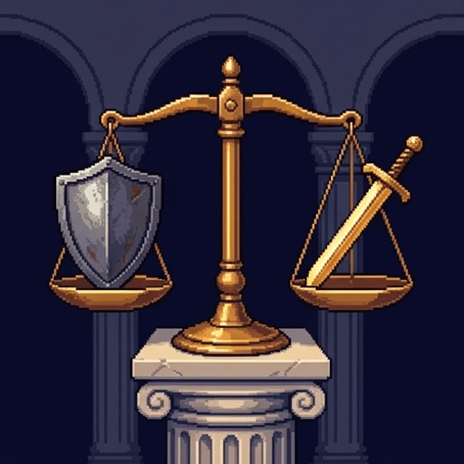
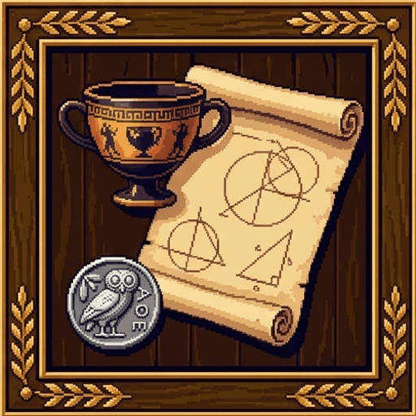

The Philosopher's Blueprint
"GREETINGS, CITIZEN!" whirs PlatoBot, adjusting its brass laurel wreath. "As Socrates famously told the Athenian Senate: 'The unexamined essay draft is not worth turning in!'"
Use → (or Next) to advance and reveal points one at a time. F = fullscreen.
The Bluebook Challenge
You are sitting in a proctored examination hall with a blank bluebook, an ink pen, and sixty minutes on the clock:
- PlatoBot was built by ancient engineers to tutor students — but a loose vacuum tube makes it hallucinate quotations.
- Quirks aside, PlatoBot knows the architecture of an argument better than any text generator.
- A timed philosophy essay is not a pop quiz testing rote memory, nor is it a personal diary entry asking for ungrounded feelings.
- Structuring an argument under time pressure builds a muscle you will use in nursing triage, systems debugging, law, and civic life.
Dawn: Where You Stand
Before PlatoBot rolls out the drafting blueprints, rate where you stand on thinking, writing, and timed exams:
A philosophy essay is primarily about sharing your personal feelings on an ethical issue.
In philosophy, every opinion is equally valid as long as the person holding it is sincere.
If artificial intelligence can draft fluent business prose, practicing timed writing by hand is obsolete.
The best strategy for a one-hour essay exam is to begin writing paragraph one immediately.
A strong argument actively seeks out and answers the most formidable objection to its thesis.
What Philosophy Actually Is
"As Socrates declared at the Olympic javelin finals," sparks PlatoBot, "'Philosophy is not collecting trivia; it is debugging your operating system!'"
- Philosophy is the systematic, critical examination of fundamental assumptions and worldviews, especially the ones you take for granted.
- Not dusty trivia about dead thinkers, and not a forum where "everyone has their own truth."
- Doing philosophy means stress-testing your deepest intuitions to see whether your reasons hold them up.
- The goal is not to win rhetorical shouting matches, but to achieve epistemic clarity about what is true, what is just, and why.
The Vibe Check vs. The Examined Argument
Students often mistake asserting a personal preference for making a philosophical argument:
States a personal feeling or cultural norm as an obvious fact without providing verifiable reasons or examining counter-evidence.
"I just feel that healthcare is a personal luxury, and that's just how the real world works."
Defines core terms, establishes clear premises, identifies trade-offs, and shows why a conclusion logically follows from shared principles.
"Healthcare is a basic right because bodily health is the necessary precondition for exercising any other human liberty."
Why Philosophy Matters for Pre-Professionals
Whether you are entering healthcare, technology, business, or public service, philosophical rigor is a practical superpower:
- In nursing: a framework for clinical triage when patient autonomy collides with non-maleficence.
- In software and IT: ethical root-cause analysis, run before you ship an autonomous system or a scoring model.
- In business: telling short-term compliance apart from actual moral responsibility.
- In every high-stakes career the rules eventually run out, and you have to justify a hard call with reasons.
Name That Discipline
Memorizing the birthplaces and publication dates of famous ancient and Enlightenment thinkers
Critically examining and stress-testing fundamental assumptions, reasons, and worldviews
Expressing your personal emotional feelings about controversial topics without needing to defend them
Writing as the Engine of Thought
"Socrates told his wrestling coach," hums PlatoBot with a click of gears, "'You do not know what you think until you attempt to write it down without contradicting yourself!'"
- An essay is not a container for ideas you finished having yesterday. Writing is how you find out what you think.
- In your head, vague intuitions feel seamless — your brain glosses the gaps.
- Paper is an epistemic mirror: unstated assumptions and missing links become visible for the first time.
- Struggling to write a clear sentence is rarely a vocabulary problem. It is an unresolved conceptual one.
The LLM Paradox: The Weightlifting Fallacy
Large language models can instantly generate grammatically polished essays, raising an urgent question: why practice writing under timed exam conditions?
- Text generators mimic style beautifully. They cannot do the internal labour of moral self-examination.
- Having a machine write your essay is hiring someone to lift your barbells: the weights move, your cognitive agency does not.
- Bluebook conditions build stamina you cannot outsource: synthesize, spot fallacies, hold a position under pressure.
- In a world of automated boilerplate, the rare skill is judging for yourself whether an argument is sound.
The Mechanics of Cognitive Agency
Fill in PlatoBot's diagnostic report on why human writing remains indispensable:
Writing serves as an engine of thought because putting words on paper forces
externalization
of internal intuitions.
Automated models can produce fluent syntax, but they cannot perform the human discipline of
self-examination.
Practicing timed essay writing builds individual cognitive
agency,
ensuring that students learn to evaluate whether claims are logically
sound.
The Working Memory Bottleneck
"In the Phaedo, Socrates warned the banquet," chirps PlatoBot: "'A student who begins writing without an outline is like a captain sailing into a fogbank without a compass!'"
- Working memory holds only three or four complex chunks at once.
- Start drafting immediately and working memory hits cognitive overload, juggling grammar, thesis, counterarguments and the clock at once.
- Hence the classic symptoms of exam panic: freezing, rambling in circles, abandoning your argument mid-page.
- So separate the planning phase from the drafting phase, deliberately.

The 10-Minute Scaffold Rule
In a standard sixty-minute bluebook exam, the most crucial moments happen before you write a single complete sentence in the bluebook:
- Spend ten minutes building a scaffold on scrap paper: thesis, key premises, best objection, rebuttal.
- With the structure on paper, working memory is free for the next forty minutes of drafting — one clear sentence at a time.
- Reserve the final ten minutes for revision to audit your argument for unstated assumptions, missing links, and logical consistency.
- Most students who plan first write a tighter essay than they would have otherwise — and, just as usefully, panic less.
The Panicked Sprinter vs. The Thoughtful Architect
Observe how two students approach the exact same sixty-minute bluebook prompt:
Begins writing introductory fluff in minute one, runs out of ideas by page two, shifts thesis mid-essay, and finishes in a disorganized panic.
Writes three pages of stream-of-consciousness summary that never actually answers the prompt's core question.
Budgets ten minutes to sketch a four-piece outline, writes directly to each point without stalling, and concludes with a unified, rigorous defense.
Produces two tight, punchy bluebook pages with clear topic sentences and a well-countered objection.
The Strategy of Scaffolding
It offloads the architectural structure to paper, freeing limited working memory to focus on sentence clarity
It guarantees that you will write twice as many pages as someone writing without a preparatory outline
Exam proctors award automatic bonus points for handing in neatly formatted scratch-paper notes
Spine Piece 1: The Thesis Statement
"A thesis statement," clanks PlatoBot, "is not a topic announcement. It is an arguable claim supported by an explicit reason!"
- A weak thesis describes: "In this essay I will discuss the pros and cons of autonomous vehicles." That is a table of contents.
- A strong one takes a stand and carries a because-clause: "Hospitals should not deploy triage algorithms because scoring patients prices their moral worth."
- Your thesis must be a claim that a reasonable, intelligent opponent could meaningfully dispute.
- If nobody in their right mind would argue the opposite (e.g., "Murder is generally bad"), you do not have a philosophical thesis.
Spot the Thesis
In this essay I will examine several ethical perspectives on algorithmic ventilator allocation
Deciding who receives a scarce ventilator is a difficult and emotionally painful decision for doctors
Hospitals should not allocate ventilators algorithmically because scoring lifespan penalizes disabled patients
Spine Piece 2: The Argument Mechanism
Once your thesis is declared, your body paragraphs must build a step-by-step logical bridge rather than a collection of unsupported assertions:
- Define your key concepts with conceptual precision so the reader knows exactly what your terms mean.
- Provide intermediate premises showing the causal or logical mechanism that connects your starting principles to your final claim.
- Avoid the common trap of mere assertion, where repeating a conclusion loudly substitutes for showing how the premises entail it.
- Use concrete, realistic examples to illustrate abstract principles, grounding your logic in observable real-world dilemmas.

Spine Piece 3: The Principle of Charity
"As Socrates shouted in the Athenian gymnasium," gears whirring excitedly, "'Knocking over a straw scarecrow proves only that you are fighting straw!'"
- The Strawman Fallacy: invent a cartoonish version of your opponent's view, then knock it down.
- The Principle of Charity requires the opposite: take your opponent's argument in its strongest, most plausible form.
- A Steelman shows intellectual honesty — and that you grasp the real depth of the dilemma.
- Beat a caricature and your reader shrugs. Beat the opponent's best argument and your conclusion is earned.

Spine Piece 4: The Rebuttal & Resolution
After presenting your opponent's strongest objection, your final task is to provide a decisive, nuanced rebuttal:
- Don't repeat your thesis louder. Explain why the objection fails.
- Show it rests on a flawed premise, misses a moral distinction, or leads somewhere worse.
- Acknowledge any legitimate concerns raised by the objection while showing that your framework provides a more coherent and balanced resolution.
- Conclude by demonstrating how your thesis emerges stronger and more refined for having survived the confrontation with its best critic.
Which Objection Is Worth Answering?
Supporters of algorithmic triage simply do not care what happens to disabled patients
Algorithms apply one published standard to every patient, without bedside fatigue or bias
Algorithms are risky and hospitals should be extremely careful about how they deploy them

469–399 BCE
The Socratic Elenchus
Plato's teacher Socrates gave philosophy its founding method: the Elenchus (cross-examination):
- Socrates worked the Athenian marketplace, asking citizens to define justice, piety and courage — and exposing the contradictions underneath.
- He called himself a gadfly, stinging the lazy horse of Athens awake — and it got him executed.
- A timed essay turns that method on yourself: your own convictions, on trial, before an impartial reader.
The Essay Blueprint Builder
Select each component below to inspect how a chaotic prompt is transformed into a four-piece bluebook scaffold:
The Examined Essay Checklist
A strong thesis statement must make an arguable claim supported by an explicit reason.
The Principle of Charity requires presenting the opponent's counterargument in its strongest, most plausible form.
A philosophy essay achieves excellence by listing all possible opinions without taking a definitive side.
Spending initial exam time on a scratch outline reduces working memory overload during drafting.
Defeating an exaggerated, cartoonish strawman argument is sufficient to prove that your thesis is correct.
Sundown in the Exam Hall
Look back at your ratings from before we examined the blueprint. Re-rate each statement — and observe where your perspective shifted:
Visit every slide, answer all checks correctly, and submit your ratings to complete the lesson.
The Examined Student
"SYSTEM AUDIT COMPLETE!" announces PlatoBot, tubes glowing steadily for once. "One quotation today is genuine. This one — and you should still go check it."
"The unexamined life is not worth living for a human being."
— Socrates, in Plato's Apology 38a
The rest of the sentence is PlatoBot's own, and it says so: "…and the examined life begins with the courage to examine your own sentences."
- You have mastered the architecture of philosophical inquiry and the cognitive science of the timed essay.
- Bluebook, clinical ethics consult, or engineering review — you now have the tools to structure, defend and stress-test an idea.